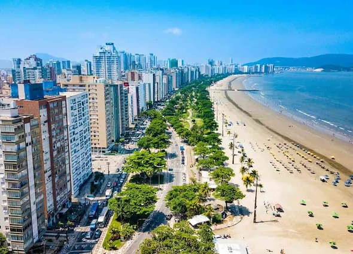

About Me
My name is Maria Laísa Santana Freitas Dubiela. I am from Brazil and I live with my family in São Paulo. I am a student at BYU and I am current working as a civil engineer. I am excited to learn more about web development. I love to study, to travel and spend time with my family.
Santos, São Paulo

Santos is a coastal city in the state of São Paulo, Brazil. It is known for its large beach garden, which is the largest in the world, and its coffee museum. Santos is also the city where the soccer player Pelé was born.